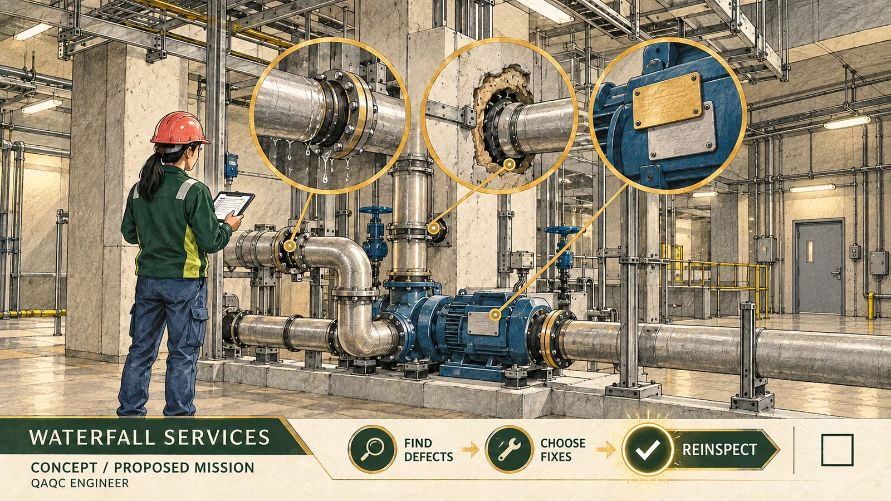

TEAM 04 / SHARED MISSION CONCEPT
Facility Management Engineer + QAQC Engineer
Find the fault. Check the repair. Bring the flow back.
THE SHARED MISSION / The Missing Flow
A low-flow warning points to a fault in the fictional waterfall service.
The Director sends the pair into the past to investigate a fictional waterfall service area. The Facility Management Engineer uses operating information and maintenance records to trace the problem. The QAQC Engineer checks the equipment, inspection records and repair evidence. They share clues, agree on a fix and run a simulated flow test together.
These mission ideas and maps are concepts, not proof of the real Jewel’s services or finished game features.
Work together. Each player completes a role-specific part. Share clues, make decisions together and check the result. Each completed checkpoint awards one piece per player.

THE MISSING FLOW / MISSION CONCEPT
FOLLOW THE CLUES.
CHECK THE FLOW.
One mission for two players. A low-flow warning gives the pair a starting point; the answer comes from sharing what each player discovers.
Read the fictional operating dashboard and maintenance log, trace the affected circuit and choose the in-game repair.
Check equipment tags, inspect the defect and repair, and compare the test result with the supplied record.
01 / Investigate together
The team follows the warning into a fictional waterfall service area. One player has the operating information; the other has the inspection record. They must compare both to find the right equipment.
02 / Check the repair
The Facility Management Engineer chooses a repair from supplied options. The QAQC Engineer reinspects it against the game checklist. If it is incomplete, the game gives clear feedback and the pair can try again.
03 / Test and report
Both players run a simulated water-flow test. The flow indicator responds to the result, and the pair report their findings to the Director. This test is a fictional game mechanic.
This mission, equipment, faults and flow test are concepts to be developed and playtested. They do not describe the real Jewel system. The 15–20 minute duration is a design target.
YOUR SHARED MISSION PATH
ONE MISSION.
TEN PIECES.
Both players work together at each checkpoint. Complete it to earn two pieces: one for each role. Follow the five checkpoints through one continuous challenge. The 15–20 minute duration is a target and needs playtesting. These maps and missions are concepts.
- CHECKPOINT 1Read the warningA low-flow alarm identifies a possible problem in the waterfall service.
- CHECKPOINT 2Trace the routeThe team must find where the fictional water route loses flow.
- CHECKPOINT 3Find the causeThe readings and inspection evidence point to different possible faults.
- CHECKPOINT 4Choose and recheckThe team must correct the fictional defect and verify the work.
- CHECKPOINT 5Test and reportThe waterfall service must pass a simulated flow check before handover.
Top-down map concept · Select a number or task to explore the mission checkpoint and its jigsaw pieces. The map shows ideas, not saved game progress.
- CHECKPOINT 01PIECES 31 + 21 / 50 · ONE EACH
Read the warning
Issue: A low-flow alarm identifies a possible problem in the waterfall service.
Facility Management EngineerRead the fictional dashboard and maintenance log to identify the affected circuit.
QAQC EngineerCheck the inspection record and match the equipment tag to the affected circuit.
MISSION ROUTE · CONCEPT
Suggested setting: Control station · fictional concept
Start: Read the warningIssue: Check the tagGoal: Identify the circuit - CHECKPOINT 02PIECES 32 + 22 / 50 · ONE EACH
Trace the route
Issue: The team must find where the fictional water route loses flow.
Facility Management EngineerFollow the marked system diagram to the suspect service area and share what the log says.
QAQC EngineerInspect the marked joint and compare its condition with the supplied checklist.
MISSION ROUTE · CONCEPT
Suggested setting: Water service route · fictional concept
Start: Trace the routeIssue: Inspect the jointGoal: Share the evidence - CHECKPOINT 03PIECES 33 + 23 / 50 · ONE EACH
Find the cause
Issue: The readings and inspection evidence point to different possible faults.
Facility Management EngineerCompare the supplied readings and maintenance history to select a possible cause.
QAQC EngineerShare the inspection evidence to help rule out the wrong choices.
MISSION ROUTE · CONCEPT
Suggested setting: Investigation point · fictional concept
Start: Compare readingsIssue: Share inspection cluesGoal: Agree on the cause - CHECKPOINT 04PIECES 34 + 24 / 50 · ONE EACH
Choose and recheck
Issue: The team must correct the fictional defect and verify the work.
Facility Management EngineerSelect the agreed in-game repair from the supplied options and tell your teammate what changed.
QAQC EngineerReinspect the repair and tag against the supplied checklist; request another attempt if needed.
MISSION ROUTE · CONCEPT
Suggested setting: Service connection · fictional concept
Start: Choose a repairIssue: Reinspect the workGoal: Confirm the fix - CHECKPOINT 05PIECES 35 + 25 / 50 · ONE EACH
Test and report
Issue: The waterfall service must pass a simulated flow check before handover.
Facility Management EngineerStart the simulated flow test and check the operating display.
QAQC EngineerCompare the result with the supplied test target and confirm the inspection record.
MISSION ROUTE · CONCEPT
Suggested setting: Test station · fictional concept
Start: Start the testIssue: Check the resultGoal: Report to the Director
YOUR TEAM'S TEN PIECES
Return to the Director with both players’ pieces. Together, the five teams complete all 50 pieces to restore the waterfall.
Explore the 50-piece jigsaw ↗